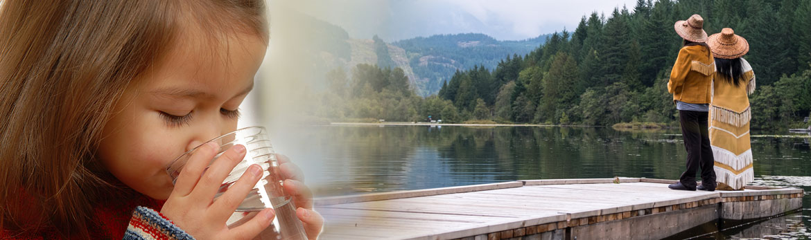
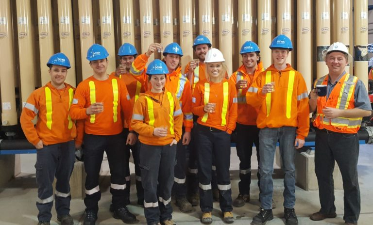

About Water Conservation Canada
Our Mission and Vision
Water Conservation Canada works to protect and conserve Canada's water resources by raising awareness about water conservation and advocating for sustainable water management practices. We envision a future where clean and safe water is accessible to all Canadians.
Our History
Founded in 2005, Water Conservation Canada has been at the forefront of water conservation efforts across the country. From community clean-up events to policy advocacy, we are committed to making a positive impact on water conservation.
Our Team
Meet the dedicated team behind Water Conservation Canada. Our staff, volunteers, and board members are passionate about protecting Canada's water resources and ensuring a sustainable future for generations to come.
Executive Team
- Jane Doe - Executive Director: Jane has over 20 years of experience in environmental advocacy and leads our organization with a vision for a sustainable future.
- John Smith - Director of Operations: John oversees our projects and initiatives, ensuring they run smoothly and efficiently.
- Emily Johnson - Director of Outreach: Emily is responsible for community engagement and educational programs, helping to spread awareness about water conservation.
Board Members
- Dr. Alice Brown: A water resource scientist who provides invaluable expertise to our board.
- Michael Green: A community leader with a passion for sustainable development.
- Rachel White: An environmental lawyer who helps navigate the legal aspects of our work.
Our Partners
We collaborate with various organizations and stakeholders to amplify our impact. Our partners include government agencies, educational institutions, and other non-profits dedicated to environmental conservation.
- Canadian Environmental Agency: Partnering on policy advocacy and environmental protection initiatives.
- Green Schools Canada: Providing educational programs about water conservation to students across the country.
- Eco-Friendly Communities: Collaborating on community clean-up projects and sustainability events.
Success Stories
Over the years, Water Conservation Canada has achieved significant milestones in water conservation efforts. Here are a few highlights:
- Successfully lobbied for stricter regulations on industrial waste disposal, reducing water pollution in major rivers.
- Implemented a national water quality monitoring program, engaging communities in citizen science projects.
- Restored over 100 hectares of wetlands, providing critical habitats for wildlife and improving water quality.
Contact Us
If you have any questions, comments, or would like to get involved, please don't hesitate to reach out. You can contact us at marcusjohnson@my.capilanou.ca or call us at (123) 456-7890.